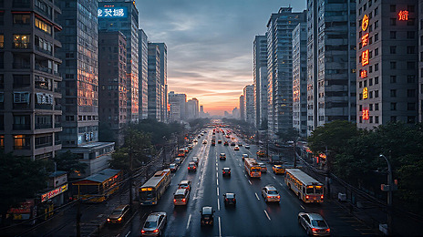

A vida no campo. Ela costuma ser bem tranquila e conectada com a natureza, com um ritmo mais calmo e uma rotina que muitas vezes envolve cuidar de plantações, animais e aproveitar o ar livre. É um jeito de viver mais próximo da terra, com uma comunidade muitas vezes unida e uma relação especial com o meio ambiente.

A Cidade
A vida na cidade costuma ser bastante agitada e cheia de possibilidades. Geralmente, há muitas opções de trabalho, lazer, cultura e transporte, o que torna o dia a dia dinâmico e cheio de oportunidades. No entanto, também pode trazer desafios, como o trânsito, a poluição e o movimento constante. Cada cidade tem seu ritmo e seu jeito especial de viver, e muitas pessoas gostam dessa energia vibrante que ela oferece.